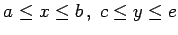

Wenn die Funktion (8.90) im Intervall [c,e] definiert und die Funktion f(x,y) im Rechteck  stetig ist, dann gilt
Man spricht in diesem Falle von Integration unter dem Integralzeichen.
| Beispiel A |
|
Integration der Funktion f(x,y) = xy über dem Rechteck . Die Funktion xy ist bei unstetig, für a > 0 ist sie stetig. Daher kann die Integrationsreihenfolge gemäß vertauscht werden. Links erhält man , rechts . Das unbestimmte Integral kann nicht durch elementare Funktionen ausgedrückt werden. Das bestimmte Integral ist allerdings bekannt, so daß sich ergibt . |
| Beispiel B |
|
Integration der Funktion über dem Rechteck . Die Funktion ist im Punkt (0,0) unstetig, so daß die Formel (8.94) nicht anwendbar ist. Die Probe ergibt |